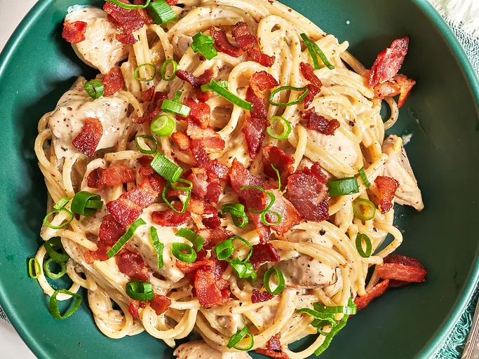

Home
Honey Mustard Spaghetti

Honey Mustard Spaghetti
Honey mustard spaghetti is a delicious and easy-to-make pasta dish that is perfect for a quick weeknight dinner. The
combination of sweet honey and tangy mustard creates a unique and flavorful sauce that pairs perfectly with spaghetti
noodles. This recipe is simple and versatile, so you can customize it with your favorite ingredients and seasonings.
Ingredients
- Spaghetti noodles
- Chicken breast
- Garlic
- Onion
- Honey
- Mustard
- Butter
- Vegetable oil
- Salt
- Pepper
Steps
- Boil the spaghetti: Bring a large pot of salted water to a boil. Add the spaghetti noodles and cook according to the
package instructions until al dente. Drain the noodles and set aside.
- Cook the chicken: Season the chicken breast with salt and pepper. In a large skillet, heat the vegetable oil over
medium-high heat. Add the chicken breast and cook for 6-7 minutes per side, or until cooked through. Remove the
chicken from the skillet and set aside.
- Make the sauce: In the same skillet, melt the butter over medium heat. Add the garlic and onion and cook until
softened. Stir in the honey and mustard, and season with salt and pepper to taste.
- Combine the ingredients: Slice the cooked chicken breast into thin strips. Add the chicken and cooked spaghetti
noodles to the skillet with the sauce. Toss to coat the noodles and chicken in the sauce.
- Serve: Divide the honey mustard spaghetti among plates and serve hot. Garnish with fresh parsley or grated Parmesan
cheese, if desired.